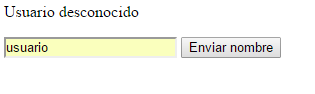
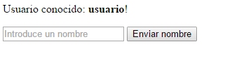

Módulo cookie
El módulo cookie es un analizador y serializador de cookies para servidores http.
Para usar el módulo es necesario guardar el módulo:
npm install cookie --save
Para poner acceder a todas las funcionalidades del módulo hay que:
var cookie = require('cookie');
Este módulo no ofrece dos funcionalidades, parse y serialize.
cookie.parse(cadena, opciones)
Analiza la cadena de una cabecera de un http cookie y devuelve el mismo transformado en un objeto con parejas de campo-valor de todos los cookies.
Entre las opciones que acepta está una función(decode) que se usará para sacar el valor de los campos durante el analisis. Si no se pasa está función, la función por defecto es decodeURIComponent.
cookie.serialize(nombre, valor, opciones)
Permite construir un par campo-valor que será serializado para la creación de un cookie con Set-Cookie.
- domain: Valor del dominio del cookie. Por defecto será el dominio actual.
- encode: Función que será usada para codificar el valor d eun cookie.Por defecto será ecodeURIComponent.
- expires: La fecha de destrución del cookie. Por defecto será cuando se cierre el navegador.
- httpOnly: Valor que no permite al cliente javascript acceder a los cookies desde document.cookie cuando es verdadero. Por defecto es falso.
- maxAge: Número entero de segundos durante los que el cookie no se destruirá.
- path: Ruta que debe existir en la fuente a la que se envia la petición.
- sameSite:
- true: Estricto uso del mismo sitio.
- false: No requerido el mismo sitio.
- 'lax': Suave uso del mismo sitio.
- 'strict': Estricto uso del mismo sitio.
- secure: Los clientes no envian a los servidores los cookies si la conexion no es segura(https) cuando se este valor es verdadero. Por defecto es falso.
Ejemplo
En el fichero ejemploCookie.js podemos ver el módulo en uso con un servidor http. Este ejemplo muestra un formulario en el lado del cliente en el que puede introducir un nombre y enviarlo.
Cuando accedemos al la raiz por primera vez veremos en el servidor:
URL: '/?name='
URL analizada:{ name: ''}
cookie no analizado: undefined
cookie analizado: {}
URL: '/favicon.ico'
URL analizada:{}
cookie no analizado: undefined
cookie analizado: {}
Como vemos, en la primera petición no hay ningún cookie guardado y la url pasa un parámetro vacio. Los cookies se analizan, pero como no hay el objeto es vacío.
var cookies = cookie.parse(req.headers.cookie || '');
Si el cliente envia un nombre, por ejemplo usuario:

URL: '/?name=usuario'
URL analizada:{ name: 'usuario' }
URL: '/?name='
URL analizada:{ name: '' }
cookie no analizado: 'name=usuario'
cookie analizado: { name: 'usuario' }
URL: '/favicon.ico'
URL analizada:{}
cookie no analizado: 'name=usuario'
cookie analizado: { name: 'usuario' }
Ahora la url ya no tiene un parámetro vacio y se envía un Cookie al cliente a partir del parámetro:
res.setHeader('Set-Cookie', cookie.serialize('name', String(query.name), {
httpOnly: true,
maxAge: 10 // 10 segundos
}));
El cliente quedaría ahora como:

Y si refrescamos la página antes de 10 segundos, se nos seguirá reconociendo como usuario. Después de diez segundos el cookie se destruirá y ya no se nos reconocerá.